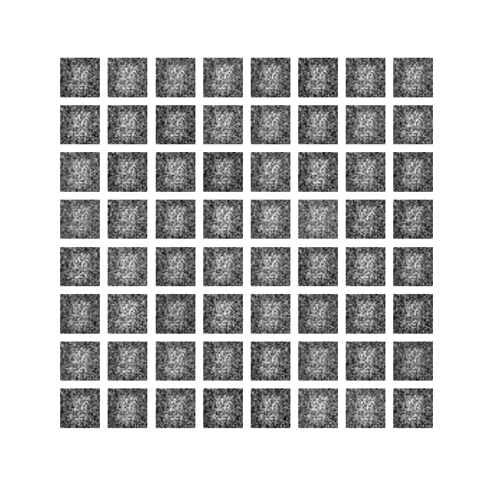
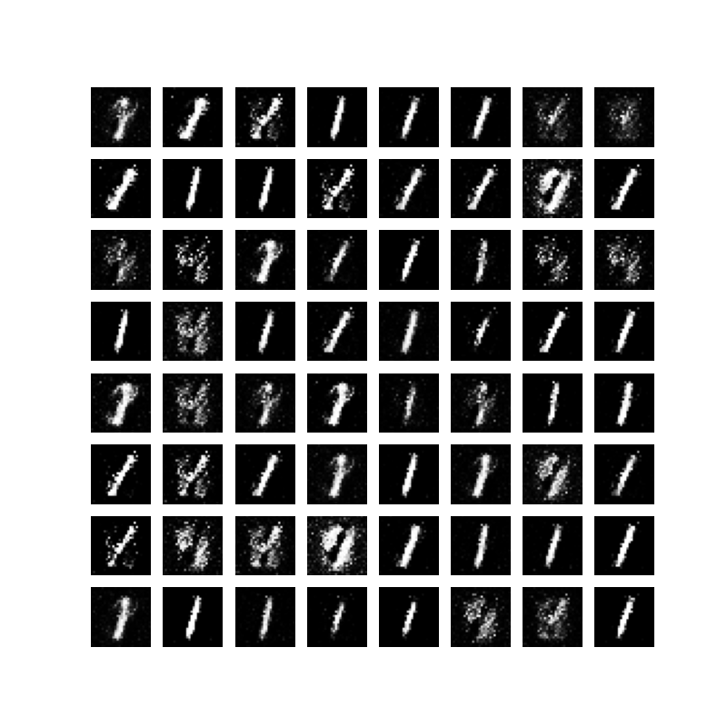

生成对抗网络
Generative Adversarial Networks
Goodfellow I , Pouget-Abadie J , Mirza M ,et al.Generative Adversarial Nets[J].MIT Press, 2014.DOI:10.3156/JSOFT.29.5_177_2.
We propose a new framework for estimating generative models via an adversarial process, in which we simultaneously train two models: a generative model G that captures the data distribution, and a discriminative model D that estimates the probability that a sample came from the training data rather than G. The training procedure for G is to maximize the probability of D making a mistake. This framework corresponds to a minimax two-player game. In the space of arbitrary functions G and D, a unique solution exists, with G recovering the training data distribution and D equal to ½ everywhere. In the case where G and D are defined by multilayer perceptrons, the entire system can be trained with backpropagation. There is no need for any Markov chains or unrolled approximate inference networks during either training or generation of samples. Experiments demonstrate the potential of the framework through qualitative and quantitative evaluation of the generated samples.
摘要：论文提出一个通过对抗过程估计生成模型的新框架。在对抗过程中，同时训练两个模型：一个捕获数据分布的生成器 G，和一个估计样本来自训练数据还是生成器 G 的判别器 D。生成器 G 的训练过程是最大化判别器 D 犯错的概率。这个框架相当于一个极大极小二人博弈游戏。在任意的 G 和 D 函数空间中，存在唯一解，使得生成器 G 能复刻训练集的数据分布，同时判别器 D 对于生成器 G 生成的任意样本作出的判断都是真假参半（真假概率各半）。如果生成器 G 和判别器 D 都定义为多层感知器，那么整个系统可以使用误差反向传播进行训练。在模型的训练过程以及样本的生成中，不需要使用马尔科夫链或者展开的近似推理网络。通过对生成的样本进行定性和定量评估，实验证明了该框架的潜力。
GAN 模型
GAN包含两个模型：
- 生成器（Generator, G）：将随机噪声映射到数据空间，目标是生成与真实数据分布 $p_{\text{data}}$ 一致的样本。
- 判别器（Discriminator, D）：区分输入样本来自真实数据还是生成器，输出为样本真实性的概率。
两者通过极小极大博弈进行训练：
为了学习生成器在数据 $x$ 上的分布 $p_g$，定义输入噪声变量 $p_z(z)$ 的先验，然后将数据空间的映射表示为 $G(z; \theta_g)$，其中 $G$ 是由具有参数 $\theta_g$ 的多层感知器表示的可微函数。
定义第二个多层感知器 $D(x; \theta_d)$，其输出一个标量。$D(x)$ 表示 $x$ 来自数据而不是 $p_g$ 的概率。
训练判别器 D，最大化正确分类训练样本和生成器 G 生成样本的概率；同时训练生成器 G，最小化 $\log(1−D(G(z)))$。
综上所述，GAN 的训练过程可表示为：
$$ \min_G \max_D V(D, G) = \mathbb{E}_{x \sim p_{\text{data}}(x)} [\log D(x)] + \mathbb{E}_{z \sim p_z(z)} [\log(1 - D(G(z)))]\tag{1} $$当生成器 G 分布 $p_g = p_{data}$，判别器 D 的最优解为 $D^*(x) = \frac{1}{2}$ 时，目标函数达到最小值 $\log({\frac{1}{2}}) + \log(1-\frac{1}{2}) = -\log{4}$。
网络训练
训练过程的巧思
在 $k$ 步优化判别器 D 和 $1$ 步优化生成器 G 之间交替进行：在 one step 的内部循环中优化判别器 D 在计算上是不可行的，并且容易在有限的数据集上导致过拟合。
最大化 $\log D(G(z))$ 代替最小化 $\log(1−D(G(z)))$ 训练生成器 G：在生成器 G 效果很差时，判别器 D可以以高置信度拒绝样本，这种情况下，$\log(1−D(G(z)))$ 不起作用。
算法步骤
小批量随机梯度下降，$k$ 为超参数，此处 $k = 1$，
for i = 1, iterations do
for k steps do
m 个噪声样本的小批量样本 {z(1),., z(m)}，来自噪声先验 pg(z)。
m 个真实样本的小批量样本 {x(1),., x(m)}，来自真实数据集。
通过公式 2 提升判别器随机梯度来更新判别器。
end for
m 个噪声样本的小批量样本 {z(1),., z(m)}，来自噪声先验 pg(z)。
通过公式 3 降低生成器随机梯度来更新生成器。
end for
代码实验
实验大概代码如下，详细代码点击此处：
import ...
class Config():
# 实验参数
class Generator(nn.Module):
# 生成器
class Discriminator(nn.Module):
# 判别器
class GAN():
def train(self):
for epoch in range(epochs):
for i, (images, _) in enumerate(train_loader):
if (i + 1) % self.config.k_steps != 0:
self.d_optimizer.zero_grad()
# 判别器训练
else:
# 生成器训练
GAN 对于 MNIST 数据集效果可如下所示：
| 第一轮生成的图片 | 第十轮生成的图片 |
|---|---|
|  |  |